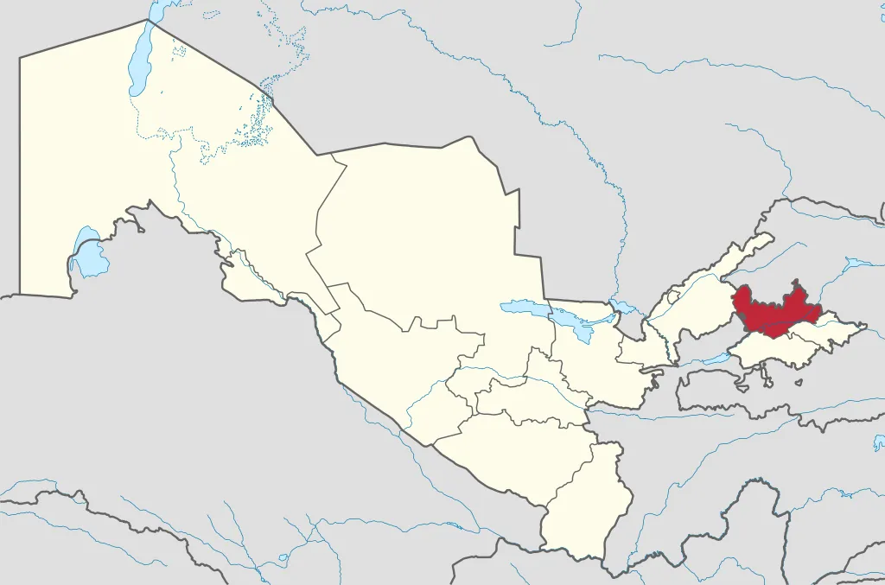

Namangan viloyati
Namangan viloyati — Oʻzbekiston Respublikasi tarkibidagi viloyat. 1941-yil 11-martda tashkil etilgan (1960-yil 25-yanvarda Andijon va Fargʻona viloyatlari tarkibiga qoʻshib yuborilgan. 1967-yil 18-dekabrda kayta tashkil etildi). Namangan viloyati respublikaning sharqida, Fargʻona vodiysining shimoli-gʻarbiy qismida, Tyanshan togʻ tizmasi tarmoklari – Qurama va Chatqol togʻlarining yon bagʻrida joylashgan. Shimoliy va shimoli-sharkdan Qirgʻiziston Respublikasining Jalolobod viloyati, jan.-sharqsan Andijon, janubidan Fargʻona, shimoliy va shimoli-gʻarbdan Toshkent viloyati va Tojikistonning Sugʻd viloyati bilan chegaradosh. Maydoni 7,44 ming km². Aholisi 2867,5 ming kishi (2021). Namangan viloyatida 11 qishloq tumani (Kosonsoy, Mingbuloq, Namangan, Norin, Pop, Toʻraqoʻrgʻon, Uychi, Uchqoʻrgʻon, Chortoq, Chust, Yangiqoʻrgʻon), 8 shahar (Namangan, Kosonsoy, Pop, Toʻraqoʻrgʻon, Uchqoʻrgʻon, Chortoq, Chust, Haqqulobod), 11 shaharcha (Jomashoʻy, Toshbuloq, Navbahor, Oltinkon, Uygʻursoy, Chorkesar, Xalqobod, Uychi, Oʻnhayat, Yangiqoʻrgʻon, Oqtosh), 99 qishloq fuqarolari yigʻini bor. Markazi – Namangan shahri.
Viloyat qishloq xoʻjaligining asosiy tarmoqlari: Donchilik, paxtachilik, sabzavotchilik, bogʻdor-chilik va uzumchilik, goʻsht-sut chorvachiligi, pillachilik. Namangan viloyati mamlakatda yetishtirilayotgan pax-taning 8–9% ini beradi. Gʻallakorlik, polizchilik, tokchilik, sabzavotchilik, ipakchilik va chorvachilik rivojlangan. Tekislikdagi sugʻoriladigan tu-manlarda chorvachilik, asosan, kora-mol, togʻ oldilaridagi tabiiy oʻtloqlarda qoʻy va echki (jumladan, mayin junli) boqiladi. Qishloq xoʻjaligida foydalaniladigan yerlar maydoni 548,1 ming ga, shundan haydaladigan yerlar 219,8 ming ga, yaylovlar 287,9 ming ga, bogʻ va koʻp yillik daraxtzorlar 31,2 ming ga, tokzorlar 8,7 ming ga ni tashkil qiladi. Don ekinlari 80,4 ming ga, paxta 109,5 ming ga, kartoshka 1,3 ming ga, sabzavot 3,5 ming ga, poliz ekinlari 1 ming ga, ozuka ekinlari 14,4 ming ga maydonni egallaydi, 7760 ga oʻrmonzor, 3 ming ga tutzor bor (2001). Yerning meliorativ holatini yaxshilash maqsadida 4 ming km kollektor drenaj tar-moklari qurilgan. Viloyatning hamma tumanlarida sugʻoriladigan maydonning asosiy qismida paxta va don ekinlari ekiladi. Namangan viloyatida 134 shirkat xoʻjaligi, 94,8 ming dexdon xoʻjaligi, 3,5 ming fermer xoʻjaligi bor. Jamoa va xususiy xoʻjaliklarda 667,1 ming qoramol (shundan 261,4 mingi sigir), 899,3 ming kuy va echki, 5,8 ming ot mavjud, par-randachilik bilan qam shugʻullaniladi.
Transport yoʻlilarning uzunligi 138 km. Avtomobil yoʻllari uzunligi 1,7 ming km (shu jumladan, qattiqqoplamalisi 1,6 ming km). Trolleybus liniyasi uzunligi 80 km. Namangan bilan Toʻraqoʻrgʻon shaharlari oraligʻida ham trolleybus qatnovi yoʻlga qoʻyilgan. Andijon–Koʻqon, Namangan–Uchqoʻrgʻon oʻrtasida poyezdlar qatnaydi. Namangan–Toshkent, Namangan–Margʻilon–Fargʻona, Namangan– Andijon, Namangan–Qoʻqon–Samarqand yoʻnalishida avtobuslar qatnovi yoʻlga qoʻyilgan. Fargʻona vodiysini respublika poytaxti bilan bogʻlovchi Toshkent–Oʻsh avtomobil yoʻlining Kamchiq dovonida uzunligi 358 va 891 m dan iborat boʻlgan ikkita tonnel qurilib foydalanishga topshirildi. Namangan viloyati havo transportining rivojlanishi 1941-yilda aerodrom qurish bilan boshlandi. 1984-yilda zamonaviy havo laynerlariga xizmat qiluvchi uchish va qoʻnish maydoni ishga tushirildi. Oʻrta Osiyo davlatlaridagi shaharlar, shuningdek, Rossiya Federatsiyasining Moskva, Sankt-Peterburg , Yekaterinburg , Ufa, Simferopol, Novosibirsk, Magadan, Norilsk, Yakutsk, Krasnoyarsk, Mirniy kabi shaharlari va Ukraina poytaxti Kiyev shahri bilan muntazam aloqa yoʻlga qoʻyildi.